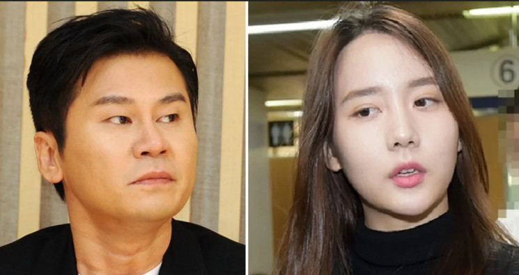

According to Dispatch, Lee contacted Han on 1 June 2016, requesting to speak to her on the phone. Han told Dispatch what transpired during the phone call and it is reportedly as follows: "He said that B.I got caught [during internal drug tests]. [B.I] told them that he did drugs with me. [Lee Seung-Hoon] asked me to meet up with him urgently. And then I went to a location near the YG building." However, instead of Lee, another person referred to as "K" met Han, telling her to keep the issue regarding B.I a secret. On 22 August 2016, "K" reportedly found out that Han had told the police about B.I after she was interrogated for her drug charges. The next day, "K" picked Han up from her home and drove her to the YG Entertainment building. According to Han, she was escorted to Yang Hyun-Suk's office where she had to surrender her phone. Han claimed that the conversation with Yang lasted one and a half hours, whereby the CEO had allegedly threatened her if she did not change her previous statement to the police. Dispatch received statements from both Yang Hyun-Suk and Han Seo-Hee regarding the conversation between them and it is as follows: In his account, Yang Hyun-Suk stated, "It's true that I took her cell phone. In case she tried to record. And even then, I was very careful with my words. I told her that we run the drug tests twice a month, and that Han Bin has never once tested positive. I told her that if Han Bin ends up going to the police and if he doesn't test positive, then she could be charged for lying, deceit, and defamation of character. That's when she got scared and she chose to take back her previous statements herself. If he went to the police then? He would have tested negative right away."Han Seo-Hee's recounted in her statement, "Yang Hyun-Suk took my cell phone and turned it off. He asked me what happened at the police. I told him that I confessed to B.I smoking marijuana with me, and buying LSD through me. Yang Hyun -uk replied, 'I hate even the idea of my boys being investigated by the police.' He also told me that they got rid of all of the drug traces from [B.I's] body, so there would be no way for him to test positive... I remember him also saying, 'Seo-Hee! You need to become a nicer child. You can't become a bad child, right... Your dream is to become a singer? Then you need to stay in the entertainment industry. But it would be a piece of cake for me to ruin you... He told me to take back my previous comments to the police.
He said that he can access all of the police reports, and also that he would hire a lawyer for me with the fees paid. I was scared, and I didn't have a choice." According to KBS, the police did file a separate investigative report on the drug allegations against B.I and had forwarded the case to the prosecutor's office, where the prosecution that took no further action. When reporters asked why this was the case, the prosecutors replied, "Han Seo-Hee was crying so much at the time of the investigation that we could not conduct the investigation properly." Han was reportedly only summoned once by the prosecutors at that time. The police stated to the press that Han is a key witness and is required to be present for them to verify the validity of the alleged text messages between her and B.I. Furthermore, the police would need to get an official testimony regarding what happened when she met with Yang Hyun-Suk. "We have to collect Han's statements and collect relevant evidence, but we cannot wait to see if Han will sincerely cooperate," a representative from the police said. If Han does not return to Seoul, the police will summon B.I this week to gather his statements first.
Commissioner General Min Gap-Ryong of the Korean National Police Agency held a press conference to address the drug controversies that are surrounding YG Entertainment. The Commissioner General stated, "We will thoroughly investigate the suspicions that were raised by forming an exclusive team that will be headed by the director of the detective division at Gyeonggi Southern Provincial Police Agency. We learned a lesson while investigating Burning Sun. By fully utilizing the knowledge we gained through previous drug cases and other similar cases, we will conduct an exhaustive investigation to resolve all of the suspicions raised by the public." South Korean news broadcast station, KBS 1TV's News 9 reported that the Anti-Corruption and Civil Rights Commission has forwarded B.I's drug allegations and the YG Entertainment cover-up allegations to the Supreme Public Prosecutors' Office. "There were three main things in the report sent to the Anti-Corruption and Civil Rights Commission at the beginning of this month: B.I's drug use charges, suspicion of corruption between Yang Hyun-Suk and the investigation office, and YG Entertainment's systematic concealment of offenders." It looks like the key will be whether or not YG and Yang Hyun-Suk actually covered up or interfered with the investigation of its agency's artists.," KBS reported. Han Seo-Hee revealed on her Instagram story that she has returned to Seoul from Japan. She has yet to clarify why she had to take a detour to Japan first before arriving in South Korea. During the interview in Lee Kyu-Yeon's Spotlight, Han revealed a YG employee named Mr Kim, who was reportedly in charge of these monthly drug tests. Mr. K always carried around a drug test kit with him. It was a big case but if you test your urine, it shows you what drugs you've taken. They needed to test you so that they can flush it out if you test positive," Han said. She went on to state that Big Bang was allegedly exempted from these tests. However, members of iKON and WINNER were tested, especially back in 2016 when the groups were still rookies. "That's when B.I tested positive for marijuana," Han explained.